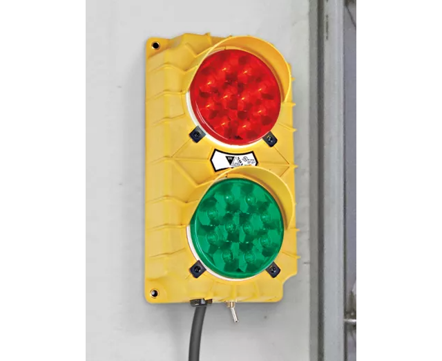

El semaforo: Un semaforo verde y rojo sirve para ver visualmente cuando debe deternerse o seguir un trasporte. Se conoce que el sensor al detectar peatones debe emitir una luz roja indicando la precaucion y la orden al transporte de deterse y esperar que pase los peatones. se programara un algorito if para un semaforo de 2 colores para indicar cuando debe mostrar una luz verde y una roja.
